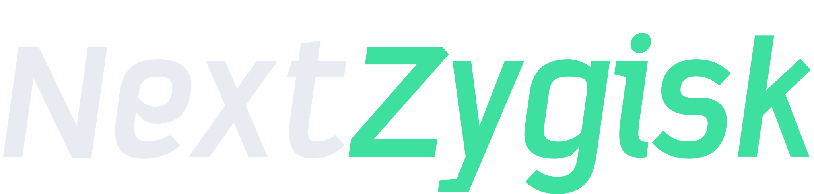
Zygisk مستقل لكل مدراء الروت
يشغّل وحدات Zygisk مثل LSPosed، NextWheel، Play Integrity Fix، ويخفي الروت عن التطبيقات اللي تختارها.
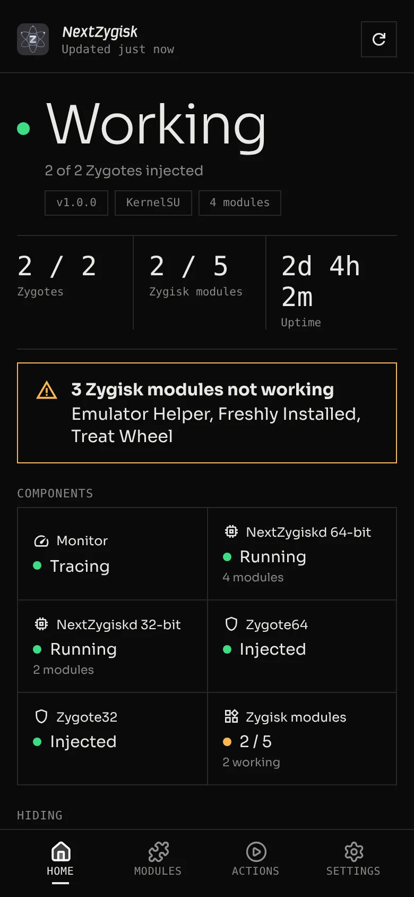
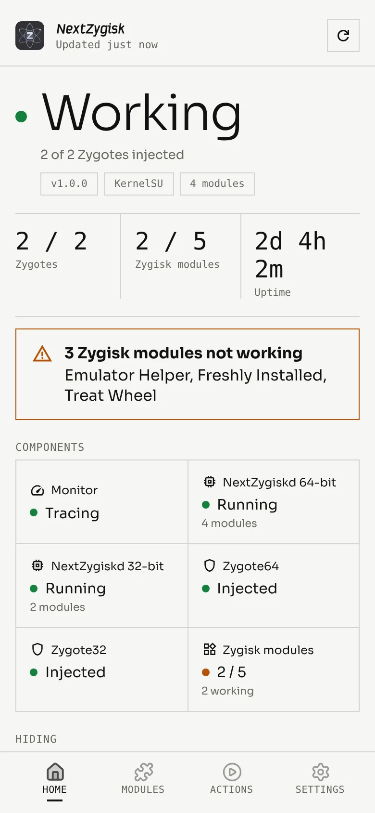


ثلاثة موديولات روت تخفي الروت داخل التطبيقات، وفي Zygote، وفي النواة، وكل وحدة تعرض حالة الباقي. مجانية ومفتوحة المصدر.
تشتغل مع KernelSU وMagisk وAPatch.كل أداة موديول روت واحد بواجهته الخاصة، وكل وحدة تعرض حالة الباقي.

يشغّل وحدات Zygisk مثل LSPosed، NextWheel، Play Integrity Fix، ويخفي الروت عن التطبيقات اللي تختارها.


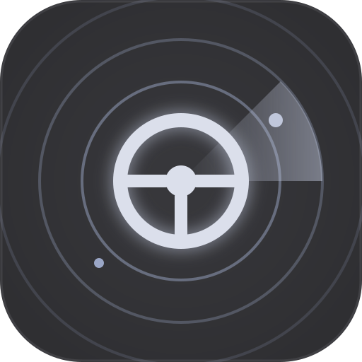
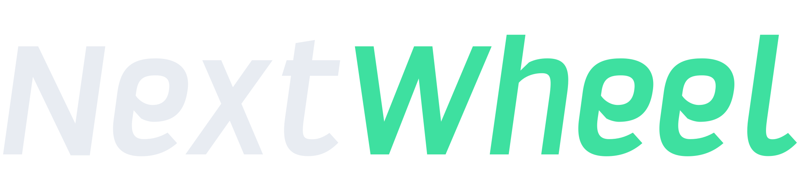
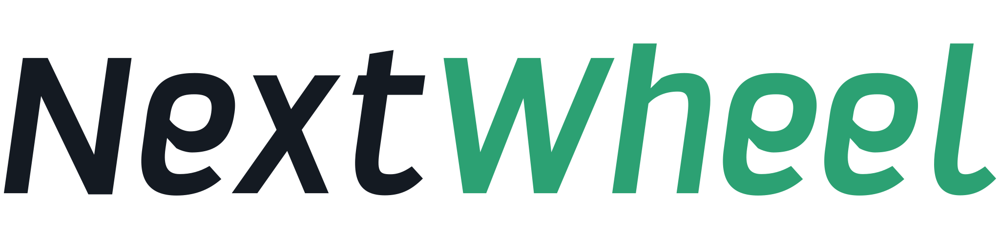
خفيف وما يترك أثر، ومعه لوحة حية توضّح إذا الإخفاء شغّال أو توقف.
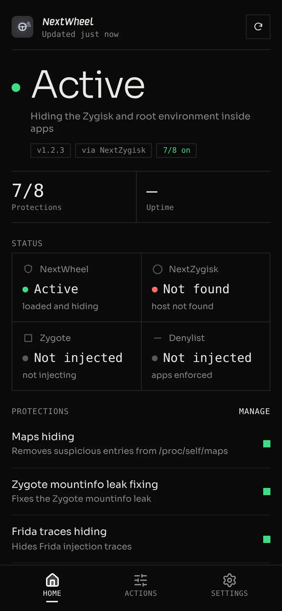
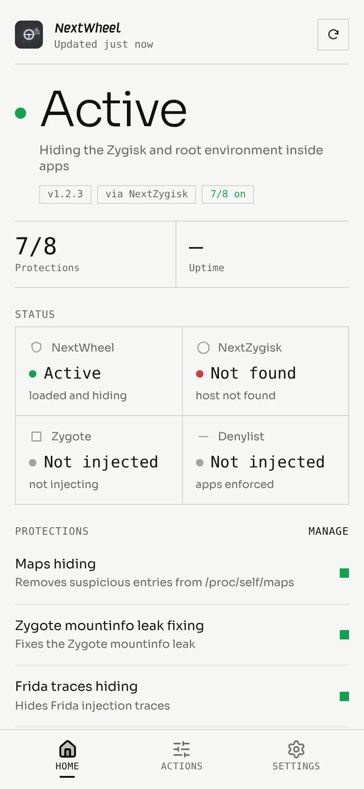
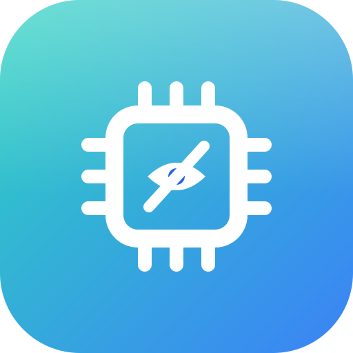
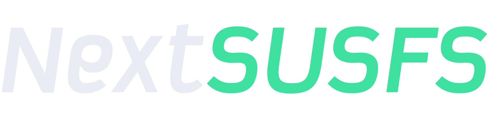
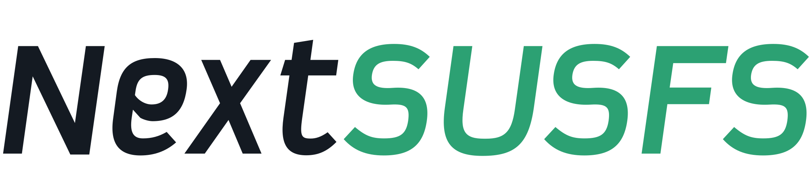
يخفي المسارات ونقاط الربط وخرائط الذاكرة والخصائص، وأكثر من 40 إعداد في 7 صفحات.
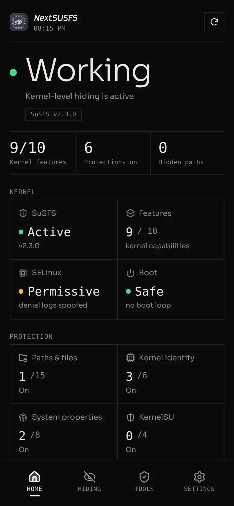
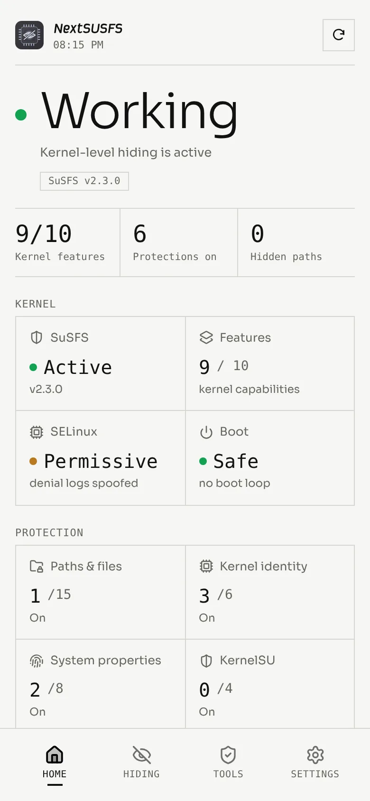
ثلاث خطوات لأي وحدة من الثلاث، من مدير الروت.